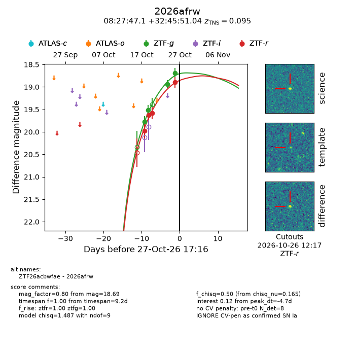
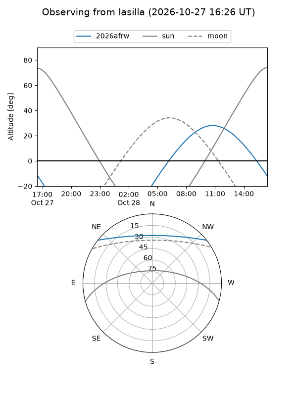
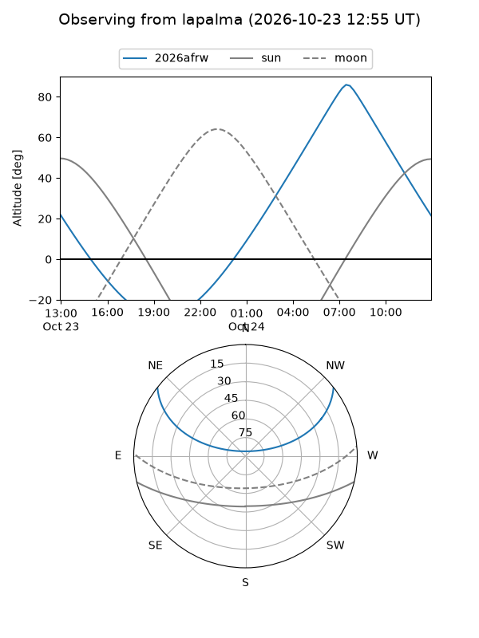
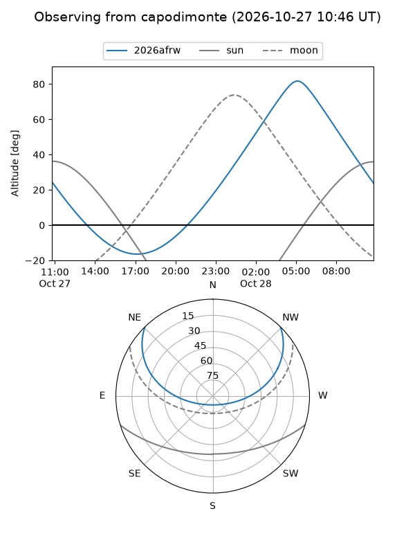
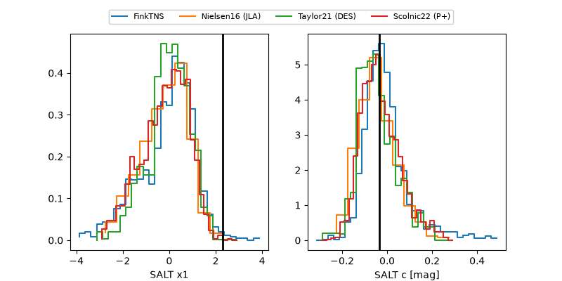

2026afrw
Target 2026afrw at 2026-10-27 17:18
Aliases and brokers:
FINK-ZTF: ztf.fink-portal.org/ZTF26acbwfae
Lasair-ZTF: lasair-ztf.lsst.ac.uk/objects/ZTF26acbwfae
ALeRCE-ZTF: alerce.online/object/ZTF26acbwfae
YSE-PZ: ziggy.ucolick.org/yse/transient_detail/2026afrw
TNS name: wis-tns.org/object/2026afrw
Direct TNS query: direct search
alt names
ZTF26acbwfae (ztf,fink_ztf)
2026afrw (tns,yse)
Coordinates:
equatorial (ra, dec) = 126.9462,+32.76418
equatorial (HMS+DMS) = 08:27:47.08,+32:45:51.04
galactic (l, b) = (189.9766,+33.51838)
Flags:
TNS type: SN Ia
TNS redshift: 0.0950
peak dt: -4.7
Photometry:
last ztfg=18.69, ztfr=18.90
4 ztfg, 4 ztfr detections
Lightcurve

Visibility



Additional plots
